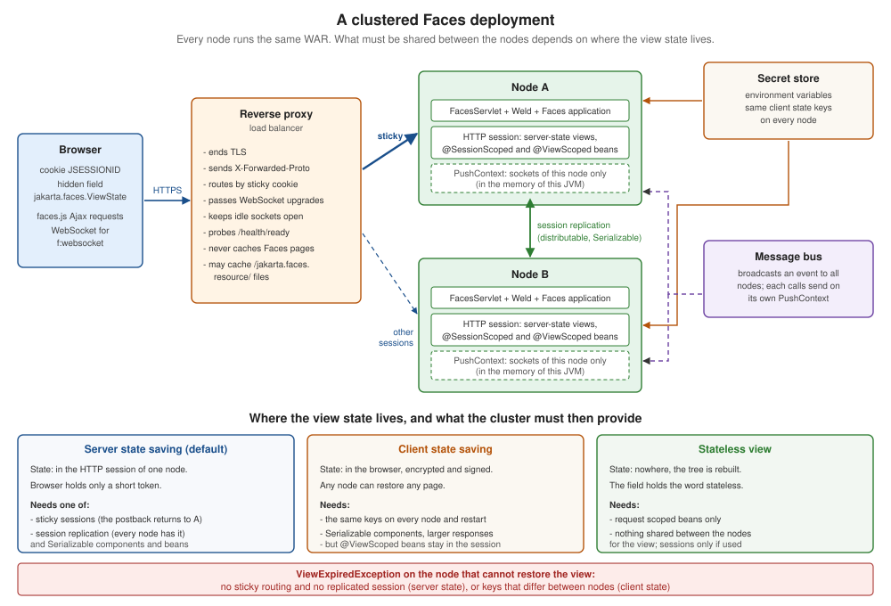

Deployment and Clustering
|
This content was generated with the assistance of AI and should be verified against the official documentation before being relied on in production. |
This page is written against Jakarta Faces 4.1 (API jakarta.faces-api 4.1.2, part of Jakarta EE 11 and Servlet 6.1), Eclipse Mojarra
4.1.17 and Apache MyFaces Core 4.1.4, with Java 17 or later (the examples were compiled with --release 21). The clustering
experiments ran two Apache Tomcat 11.0.26 nodes with Weld 6.0.4.Final, once with Mojarra and once with MyFaces, behind Apache HTTP
Server 2.4.67, and were driven with scripted HTTP requests; every result quoted below was observed on 2026-10-08. Only Faces 4.1
was run; the mechanisms described here exist in Faces 4.0 (Jakarta EE 10) as well, and the differences between the releases are collected in
What Changed per Version. Faces 5.0 is still a milestone release and nothing here describes it as current behaviour. What was not run (Docker
builds, the nginx and Kubernetes files, WildFly and Payara clusters) is marked where it appears.
A single Faces application on a single server hides a lot. The view state is in the session of that one JVM, the flash is in
memory, the @ApplicationScoped beans are the only instances, and a restart is the only way to lose anything. Deployment
changes that in two steps. The first is packaging: the WAR is built once, the same file runs in every environment, and what
changes between environments is configuration. The second is scale and availability: with two nodes behind a load balancer, a
postback can reach a node that has never seen the page, and a node can disappear between a request and the next one. Faces has
a precise answer to the question "where does my state live", and that answer decides what the cluster must provide. This page
follows the path from the WAR to a failing node: packaging, the Production stage, containers, the proxy in front, then the
three strategies (sticky sessions, session replication, client state) and the traps in each.
The page is about the Faces-specific parts of deployment. Docker, Kubernetes and the cloud load balancers have their own sections of this guide, linked in Related Pages.
The Bookshelf Deployment Used on This Page
The scenario is the Bookshelf application of the other pages, with a few additions that exist only to watch state move:
| Class | Purpose |
|---|---|
|
a |
|
the visitor’s reading list as a |
|
the same list kept as an immutable value in one session attribute, the replication-safe version |
|
adds an |
|
|
|
an optional remedy for state changed in place (Changes Made in Place Are Not Replicated) |
Both nodes run the same exploded WAR on ports 8760 and 8761; the proxy listens on 8762. In the tables below, "counter" is the value of the view bean’s counter after three Save postbacks on node A and one more on node B, so 4 means that node B continued with the same bean instance node A used, and 1 means that it found an older or a new one.
Packaging the WAR
A Faces application is a standard WAR: WEB-INF/classes, WEB-INF/lib, the XHTML views and resources at the root (or under
src/main/webapp in a Maven project), WEB-INF/web.xml and WEB-INF/beans.xml. What decides the contents is who provides
Faces. On a Jakarta EE server (GlassFish, WildFly, Payara, Open Liberty, TomEE) the server has the Faces implementation and Weld
or OpenWebBeans, and the WAR holds only the application and the compile-time API as provided. On a plain servlet container such
as Tomcat the WAR carries the implementation, a CDI container and the annotations API itself. One pom.xml with a profile covers
both, and both were built:
<?xml version="1.0" encoding="UTF-8"?>
<project xmlns="http://maven.apache.org/POM/4.0.0"
xmlns:xsi="http://www.w3.org/2001/XMLSchema-instance"
xsi:schemaLocation="http://maven.apache.org/POM/4.0.0 https://maven.apache.org/xsd/maven-4.0.0.xsd">
<modelVersion>4.0.0</modelVersion>
<groupId>org.example</groupId>
<artifactId>bookshelf</artifactId>
<version>1.0.0</version>
<packaging>war</packaging>
<properties>
<maven.compiler.release>21</maven.compiler.release>
<project.build.sourceEncoding>UTF-8</project.build.sourceEncoding>
<!-- A fixed timestamp makes two builds of the same commit byte-for-byte equal. -->
<project.build.outputTimestamp>2026-10-08T00:00:00Z</project.build.outputTimestamp>
</properties>
<dependencies>
<!-- Compile against the platform API; the server provides the implementation. -->
<dependency>
<groupId>jakarta.platform</groupId>
<artifactId>jakarta.jakartaee-web-api</artifactId>
<version>11.0.0</version>
<scope>provided</scope>
</dependency>
</dependencies>
<build>
<finalName>bookshelf</finalName>
<plugins>
<plugin>
<artifactId>maven-war-plugin</artifactId>
<version>3.5.1</version>
</plugin>
</plugins>
</build>
<profiles>
<!-- mvn -Ptomcat package: a plain servlet container needs Faces, Weld and the annotations in the WAR. -->
<profile>
<id>tomcat</id>
<dependencies>
<dependency>
<groupId>org.glassfish</groupId>
<artifactId>jakarta.faces</artifactId>
<version>4.1.17</version>
</dependency>
<dependency>
<groupId>org.jboss.weld.servlet</groupId>
<artifactId>weld-servlet-shaded</artifactId>
<version>6.0.4.Final</version>
</dependency>
<dependency>
<groupId>jakarta.annotation</groupId>
<artifactId>jakarta.annotation-api</artifactId>
<version>3.0.0</version>
</dependency>
</dependencies>
</profile>
</profiles>
</project>The default build produced a WAR of 22,519 bytes with no libraries in WEB-INF/lib. With -Ptomcat it produced 6.1 MB
containing jakarta.faces-4.1.17.jar, weld-servlet-shaded-6.0.4.Final.jar and jakarta.annotation-api-3.0.0.jar.
Which libraries a given server needs, and what happens when the WAR carries a second implementation that the server also has, is the
subject of Jakarta EE Servers (Tomcat and Weld covers the case where you bring the implementation); the short version observed there is
that a WAR with its own Faces implementation can clash with the one the server provides, so decide per target and keep the dependency
scope honest.
Reproducible builds. A deployment pipeline is easier to trust when two builds of the same commit give the same file. The property
project.build.outputTimestamp in the POM above fixes the timestamps in the archive; building the Tomcat variant twice, with a
clean and a pause in between, produced the same SHA-256 (18794ab4... in the run) both times. The benefit for operations
is that the checksum of the WAR identifies the build and a changed checksum means changed content.
web.xml. A WAR no longer needs one, because Faces 4 registers FacesServlet itself, but a production WAR usually has one for
the parts that are decisions of the deployment: the project stage, where the view state lives, the session cookie, the
error pages and <distributable/>. The file used for every run in the clustering sections is below; the elements are explained in
the sections that use them. It validates against the Servlet 6.1 schema (web-app_6_1.xsd).
<?xml version="1.0" encoding="UTF-8"?>
<web-app xmlns="https://jakarta.ee/xml/ns/jakartaee"
xmlns:xsi="http://www.w3.org/2001/XMLSchema-instance"
xsi:schemaLocation="https://jakarta.ee/xml/ns/jakartaee https://jakarta.ee/xml/ns/jakartaee/web-app_6_1.xsd"
version="6.1">
<display-name>bookshelf</display-name>
<!-- Lets the container replicate or persist sessions; every fragment in WEB-INF/lib must agree. -->
<distributable/>
<context-param>
<param-name>jakarta.faces.PROJECT_STAGE</param-name>
<param-value>Production</param-value>
</context-param>
<context-param>
<param-name>jakarta.faces.FACELETS_REFRESH_PERIOD</param-name>
<param-value>-1</param-value>
</context-param>
<context-param>
<param-name>jakarta.faces.FACELETS_SKIP_COMMENTS</param-name>
<param-value>true</param-value>
</context-param>
<context-param>
<param-name>jakarta.faces.STATE_SAVING_METHOD</param-name>
<param-value>server</param-value>
</context-param>
<!-- Mojarra only: re-set session attributes so that replication sees the changes. MyFaces ignores it. -->
<context-param>
<param-name>com.sun.faces.enableDistributable</param-name>
<param-value>true</param-value>
</context-param>
<servlet>
<servlet-name>facesServlet</servlet-name>
<servlet-class>jakarta.faces.webapp.FacesServlet</servlet-class>
<load-on-startup>1</load-on-startup>
</servlet>
<servlet-mapping>
<servlet-name>facesServlet</servlet-name>
<url-pattern>*.xhtml</url-pattern>
</servlet-mapping>
<session-config>
<session-timeout>30</session-timeout>
<cookie-config>
<http-only>true</http-only>
<secure>true</secure>
</cookie-config>
<tracking-mode>COOKIE</tracking-mode>
</session-config>
<error-page>
<exception-type>jakarta.faces.application.ViewExpiredException</exception-type>
<location>/expired.xhtml</location>
</error-page>
<error-page>
<error-code>500</error-code>
<location>/error.xhtml</location>
</error-page>
<welcome-file-list>
<welcome-file>index.xhtml</welcome-file>
</welcome-file-list>
</web-app>Source: Jakarta Servlet 6.1 specification and Jakarta Faces 4.1 specification, 11.1.3 Application Configuration Parameters
Two details of that file are worth a sentence each. <distributable/> is the application’s promise that it can be spread over several
JVMs: every session attribute must then be serialisable, and the container is free to replicate or persist sessions. The <session-config> makes the session cookie HttpOnly and Secure; when the
nodes sit behind a proxy that ends TLS, the Secure flag is set from the configuration and does not depend on the proxy
(The Reverse Proxy in Front of the Nodes shows the other half). The beans.xml is the one every Faces application has:
<?xml version="1.0" encoding="UTF-8"?>
<beans xmlns="https://jakarta.ee/xml/ns/jakartaee" xmlns:xsi="http://www.w3.org/2001/XMLSchema-instance"
xsi:schemaLocation="https://jakarta.ee/xml/ns/jakartaee https://jakarta.ee/xml/ns/jakartaee/beans_4_1.xsd"
version="4.1" bean-discovery-mode="annotated"/>On Tomcat the application needs nothing else in web.xml: the WAR built with -Ptomcat, unpacked and run on the two-node
cluster without an explicit Weld listener, served pages and replicated sessions on both nodes. The context root is the name of
the WAR (bookshelf.war serves /bookshelf; a WAR called ROOT.war serves /).
The Production Stage on a Server
jakarta.faces.PROJECT_STAGE is Production when it is absent, and a mistyped value is also Production, so the setting that
matters in an environment is the one that must be absent from it: nothing may switch a server that real users reach to
Development. How the stage is resolved (a JNDI entry beats the context parameter), what each stage changes and how to select it per
environment is on the project stages section of the configuration page;
the cost of running anything else is measured on the performance page. For a deployment the
checklist is short:
| Setting | Production value and reason |
|---|---|
|
|
|
|
|
|
|
written explicitly ( |
an |
a friendly page of your own; see ViewExpiredException handling and the error pages |
the container’s own error report |
switched off, see below |
the session cookie |
|
The container’s own error page. A request that fails without an error-page mapping gets the server’s default report. On Tomcat
11.0.26 that report shows the exception message and a stack trace. The run that follows posted a page rendered by node A to node B
without a session (the cluster-failure case of the next sections), which ends in a ViewExpiredException:
without the valve: 2198 bytes Exception Report, Message, Description, Exception, stack trace ...
with the valve: 451 bytes <h1>HTTP Status 500 - Internal Server Error</h1>The valve is one element in the <Host> of server.xml:
<Valve className="org.apache.catalina.valves.ErrorReportValve"
showReport="false" showServerInfo="false"/>Faces' own error handling (the error-page elements, an ExceptionHandler) answers first for exceptions that reach Faces; the
valve is the last line of defence for everything else. Other servers have their equivalents; the point is that a stack trace and a
server version are information for the attacker and for nobody else.
Docker Images for Tomcat, WildFly and Payara
A container image puts the WAR, the server and its configuration in one artifact. The Docker pages of this guide cover the mechanics (Dockerfile fundamentals, Java images and image best practices); this section is about what is specific to a Faces WAR on three servers. The image names and tags below were checked against the registries on 2026-10-08, and the paths and users against the images' own Dockerfiles. The images were not built, because no Docker daemon ran in the scratch environment.
Tomcat. The official image is tomcat:11.0.26-jdk21-temurin-noble (tags with jre instead of jdk and with Java 17 and 25
exist). Its webapps directory is empty, Tomcat runs as root unless told otherwise, and the console receives the log. A WAR copied to
/usr/local/tomcat/webapps is deployed at start:
FROM tomcat:11.0.26-jdk21-temurin-noble
# The official image runs Tomcat as root and ships an empty webapps directory.
RUN groupadd --system --gid 10001 bookshelf \
&& useradd --system --uid 10001 --gid bookshelf --no-create-home bookshelf \
&& chown -R bookshelf:bookshelf /usr/local/tomcat/logs /usr/local/tomcat/temp /usr/local/tomcat/work
COPY --chown=bookshelf:bookshelf target/bookshelf.war /usr/local/tomcat/webapps/bookshelf.war
COPY --chown=bookshelf:bookshelf docker/server.xml /usr/local/tomcat/conf/server.xml
USER bookshelf
EXPOSE 8080
# CMD ["catalina.sh", "run"] is inherited from the base image; Tomcat logs to the console.Source: Docker Official Image: tomcat
WildFly. The image is quay.io/wildfly/wildfly:41.0.1.Final-jdk21 (the old jboss/wildfly image on Docker Hub is no longer
updated). It runs as the jboss user, starts standalone.sh -b 0.0.0.0, and the deployment scanner of the default
configuration deploys what is in /opt/jboss/wildfly/standalone/deployments/. The default standalone.xml has no clustering;
the high-availability configuration is standalone-ha.xml, selected with --server-config:
FROM quay.io/wildfly/wildfly:41.0.1.Final-jdk21
# The deployment scanner of the default standalone configuration picks the WAR up.
COPY --chown=jboss:root target/bookshelf.war /opt/jboss/wildfly/standalone/deployments/bookshelf.war
# standalone-ha.xml adds the clustering subsystems that distributable web applications use.
CMD ["/opt/jboss/wildfly/bin/standalone.sh", "-b", "0.0.0.0", "--server-config=standalone-ha.xml"]Payara. payara/server-full:7.2026.9 exists (a -jdk25 variant too) and runs the server’s JVM as the payara user. The entry
point deploys every WAR it finds in /opt/payara/deployments after the domain starts, and the image configures the server log to go
to the console. Its Dockerfile sets the administration password to a well-known literal at build time, so the administration port
(4848) and the debug port (9009) must never be published; only 8080 and 8181 are the application’s:
FROM payara/server-full:7.2026.9
# The entry point of the image deploys every WAR it finds in this directory.
COPY --chown=payara:payara target/bookshelf.war /opt/payara/deployments/bookshelf.warSource: Docker Hub: payara/server-full and Payara image sources
What every image has in common is how it learns its secrets. The client-state keys of Client State Saving Across Nodes, a database password or an OpenID Connect client secret reach the container as environment variables or mounted files, from a secret store, never as a line of the Dockerfile and never as a file in the WAR (the security page lists the rules). A value written in a Dockerfile is in every layer of the image and in its history.
Compose and Kubernetes
Two nodes behind a proxy is the smallest cluster, and Compose describes it in one file. docker compose config accepted the
file below (syntax and schema; the stack was not started). The key values come from the caller’s environment or from an untracked
.env file, and no key is in the file:
services:
bookshelf-a:
build: .
environment:
NODE_NAME: node-a
FACES_CLIENT_SECRET: # passed through from the shell or from an untracked .env file
MYFACES_SECRET:
MYFACES_MAC_SECRET:
expose: ["8080"]
bookshelf-b:
build: .
environment:
NODE_NAME: node-b
FACES_CLIENT_SECRET:
MYFACES_SECRET:
MYFACES_MAC_SECRET:
expose: ["8080"]
proxy:
image: nginx:1.29
ports: ["8080:80"]
volumes:
- ./nginx.conf:/etc/nginx/conf.d/default.conf:ro
depends_on: [bookshelf-a, bookshelf-b]Source: Docker Compose documentation
On Kubernetes the same idea is a Deployment with two replicas and a Service. The parts that matter to Faces are the readiness probe (a node that is starting, or leaving, must not receive postbacks: Monitoring), the secret injected as an environment variable, a pod name as the node name, and a grace period long enough for requests in flight. This manifest parses as YAML; it was not applied, because no cluster was available:
apiVersion: apps/v1
kind: Deployment
metadata:
name: bookshelf
spec:
replicas: 2
selector:
matchLabels: { app: bookshelf }
template:
metadata:
labels: { app: bookshelf }
spec:
terminationGracePeriodSeconds: 60
containers:
- name: bookshelf
image: registry.example.com/bookshelf:1.0.0
ports:
- containerPort: 8080
env:
- name: NODE_NAME
valueFrom: { fieldRef: { fieldPath: metadata.name } }
- name: FACES_CLIENT_SECRET
valueFrom: { secretKeyRef: { name: bookshelf-faces, key: client-secret } }
readinessProbe:
httpGet: { path: /bookshelf/health/ready, port: 8080 }
periodSeconds: 5
lifecycle:
preStop:
exec: { command: ["sleep", "10"] } # let the load balancer notice that the pod is leaving
---
apiVersion: v1
kind: Service
metadata:
name: bookshelf
spec:
selector: { app: bookshelf }
ports:
- port: 80
targetPort: 8080A Service load-balances per connection, not per session, so the manifest gives Faces no stickiness at all: every strategy of the sections below must come from the application (replication, client state) or from the ingress or gateway in front of the Service (cookie affinity). The Kubernetes pages of this guide cover the objects: health probes and lifecycle, Services, Ingress, Gateway API, Secrets and deployment strategies.
The Reverse Proxy in Front of the Nodes
Production traffic reaches a Faces application through a reverse proxy or load balancer that ends TLS, spreads the requests, and (sometimes) sends a session back to the node that holds it. The application server sees plain HTTP from the proxy’s address. Four things about that arrangement concern Faces.
1. The scheme and the client address. The proxy tells the node what the browser used with X-Forwarded-Proto, and the node must
be told to believe it, but only from the proxy. On Tomcat that is the RemoteIpValve. The run below sent the same request with
X-Forwarded-Proto: https, once to a node without the valve and once to a node with it; the Secure flag of the
session cookie that Tomcat created is the visible difference (the redirect of a faces-redirect=true navigation was the relative
/bookshelf/draft.xhtml in both runs, so the redirect itself does not depend on the scheme):
without the valve: Set-Cookie: JSESSIONID=...node-a; Path=/bookshelf; HttpOnly
with the valve: Set-Cookie: JSESSIONID=...node-a; Path=/bookshelf; Secure; HttpOnly<Valve className="org.apache.catalina.valves.RemoteIpValve"
internalProxies="127\.0\.0\.1|::1|0:0:0:0:0:0:0:1"/>The internalProxies expression lists the addresses whose forwarded headers are trusted; anything else is ignored. The proxy, for its part,
must overwrite the forwarded headers rather than append to what the client sent, otherwise a client chooses its own address. The
OmniFaces page shows what that costs: a rate limit keyed on the forwarded address was bypassed
by five requests that each sent a different X-Forwarded-For. The cookie flag is the cheap protection that works either way,
which is why the web.xml above also sets <secure>true</secure> itself.
2. Where a request goes. This is the load-balancing decision of Sticky Sessions. The following httpd configuration was run with the two nodes: it routes by the route suffix that Tomcat adds to the session id.
# Directives of the proxy in front of the two Tomcat nodes (Apache HTTP Server 2.4).
# Modules: proxy, proxy_http, proxy_balancer, lbmethod_byrequests, slotmem_shm, headers.
# The browser talked to the proxy over HTTPS; the nodes see plain HTTP.
RequestHeader set X-Forwarded-Proto "https"
ProxyPreserveHost On
<Proxy "balancer://bookshelf">
BalancerMember "http://127.0.0.1:8760" route=node-a
BalancerMember "http://127.0.0.1:8761" route=node-b
# Tomcat appends the jvmRoute of the Engine to the session id: JSESSIONID=...<id>.node-a
ProxySet stickysession=JSESSIONID|jsessionid scolonpathdelim=On
</Proxy>
ProxyPass "/bookshelf" "balancer://bookshelf/bookshelf"
ProxyPassReverse "/bookshelf" "balancer://bookshelf/bookshelf"Source: Apache HTTP Server 2.4: mod_proxy_balancer and Apache Tomcat 11: Clustering and load balancing with Apache HTTP Server
3. WebSockets. f:websocket opens a long-lived connection to /jakarta.faces.push/<channel>. The proxy must pass the upgrade
and keep an idle connection open longer than its own timeout. In httpd that is mod_proxy_wstunnel (a ProxyPass with a ws://
URL for the push path); in nginx it is the Upgrade and Connection headers and a raised proxy_read_timeout, whose default
is 60 seconds. The nginx file below follows its documentation and was not run (no nginx was available); it also shows the open-source
sticky cookie directive, which exists since nginx 1.27.3. A message sent to a channel reaches the sockets of one node only: see
State That Stays on One Node and the WebSocket page.
# conf.d/default.conf of the nginx container in front of two Bookshelf nodes.
map $http_upgrade $connection_upgrade {
default upgrade;
'' close;
}
upstream bookshelf {
server bookshelf-a:8080;
server bookshelf-b:8080;
# Session affinity with a cookie that nginx sets itself (open source since nginx 1.27.3).
sticky cookie bookshelf_node expires=1h path=/ httponly secure;
}
server {
listen 80;
location /bookshelf/ {
proxy_pass http://bookshelf;
proxy_set_header Host $host;
proxy_set_header X-Forwarded-For $remote_addr; # overwrite, never append what the client sent
proxy_set_header X-Forwarded-Proto $scheme;
# f:websocket: pass the upgrade and keep idle sockets open longer than the 60 s default.
proxy_set_header Upgrade $http_upgrade;
proxy_set_header Connection $connection_upgrade;
proxy_read_timeout 1h;
}
}4. Caching. A shared cache in front of Faces must not store the pages, which are per user and carry a state token. The resources
served from /jakarta.faces.resource/ can be cached according to the rules of the
resource handling page. Neither httpd (with mod_cache not loaded) nor nginx (without
proxy_cache) caches anything in the configurations above, which is the safe default.
The cloud providers' load balancers (see the AWS, Azure and Google Cloud sections of this guide) offer cookie-based affinity with their own cookie, and the Kubernetes ingress and gateway objects have their own affinity settings; the Faces rule is the same everywhere: if a strategy needs the postback to return to the node that rendered the page, something in front of the nodes must make it so.
Where the View State Lives, and What the Cluster Must Provide
The view state is what Faces needs to restore a page at the next postback: the component tree’s changes, and with them the identity of the view-scoped beans. The state saving page explains the mechanism; for a cluster it comes down to one question with three answers, drawn in the figure.

Server state saving (the default of both implementations) keeps the state in the HTTP session of the node that rendered the page and
sends only a token. Client state saving sends the whole state, encrypted and signed, in the jakarta.faces.ViewState field and keeps
nothing on the server. A stateless view (f:view transient="true") saves nothing and sends the word stateless. Combined with the
two ways of moving a request between nodes, the strategies are:
The rest of the page tests each box of that diagram: sticky sessions in Sticky Sessions, replication in Session Replication, the rules for beans in Serialisable Beans and Components and Changes Made in Place Are Not Replicated, client state in Client State Saving Across Nodes, and the surprise of the last box in @ViewScoped in a Cluster.
The observed behaviour of the three strategies, on the same two nodes, is the baseline for everything that follows. A page is rendered by node A and three Save postbacks run there; the next postback goes to node B with the state A produced last. The rows differ in what node B has:
| Strategy and what B has | Mojarra 4.1.17 | MyFaces 4.1.4 |
|---|---|---|
server state, B has no session of that user |
|
|
server state, B has A’s replicated session |
restored, counter 4 (with |
restored, view bean found but counter 1 (Changes Made in Place Are Not Replicated) |
client state, same keys, no session |
restored; a new view bean (counter 1) |
restored; a new view bean (counter 1) |
stateless view, no session, different keys |
works |
works |
Sticky Sessions
A sticky (or affinity) load balancer sends every request of a session to the node that created it. The balancer needs a key: Tomcat
appends the jvmRoute of its <Engine> to the session id (JSESSIONID=<id>.node-a), and httpd’s stickysession=JSESSIONID|jsessionid
reads the suffix and picks the member with route=node-a. nginx’s sticky cookie sets a cookie of its own. For Tomcat the
only server-side step is the attribute:
<Engine name="Catalina" defaultHost="localhost" jvmRoute="node-a">Behind the httpd configuration of The Reverse Proxy in Front of the Nodes, one client made six requests and all of them reached the same node (X-Node: node-b
in that run); a second batch of new clients was distributed by the balancer’s algorithm (2 and 6 of 8 in the small run). Sticky sessions
are the cheapest strategy, and everything in Faces works with them: server state, @ViewScoped, the flash, the session and application
beans. (Weld enforces the Serializable rule of the passivating scopes at deployment in any case; see the
scopes page.) Their limits are the limits of a node:
-
A node that goes down takes its sessions with it. The next postback of each of its users reaches another node, which answers with a
ViewExpiredException, and every@SessionScopedbean (the login, the shopping cart) is gone. The server-state row of the table above without a session is that situation. -
A restart is the same as a crash unless sessions are persisted, which is why a rolling restart of a sticky cluster logs users out (Failover and Rolling Restarts).
-
Load can become uneven, because a session is bound to a node for its whole life and long-lived sessions of heavy users do not move.
-
Stickiness is a hint, not a guarantee. A proxy can lose its table, a cookie can be dropped by a browser setting, and a health check can remove a node. Code that is correct only if the request returned to the same node has a bug that appears in production only.
Use sticky sessions as the first line (they save the network traffic of replication) and add replication or client state when losing a session is not acceptable.
Session Replication
Session replication copies HTTP sessions to other nodes, so that any of them can continue. The application opts in with
<distributable/> (shown in the web.xml above), and the container decides how: Tomcat’s cluster with a DeltaManager (all to
all) or a BackupManager (one backup per session), WildFly’s distributable-web subsystem on Infinispan, and similar mechanisms in the
other servers. The Faces side has three requirements: the session must contain only serialisable objects (Serialisable Beans and Components), changes
must reach the replication mechanism (Changes Made in Place Are Not Replicated), and, on Mojarra, one context parameter must be set.
Tomcat. The cluster of the experiments is the <Cluster> element below inside the <Engine>. It uses the BackupManager, a
static membership of the two nodes (multicast discovery is the default of Tomcat’s cluster, but many container networks do not carry
multicast), and Tomcat’s ReplicationValve to start the replication when a request ends. Node B has the same element with the roles of the
addresses swapped. On separate hosts the addresses are the hosts' own.
<Engine name="Catalina" defaultHost="localhost" jvmRoute="node-a">
<Cluster className="org.apache.catalina.ha.tcp.SimpleTcpCluster" channelSendOptions="8">
<Manager className="org.apache.catalina.ha.session.BackupManager" notifyListenersOnReplication="true" mapSendOptions="6"/>
<Channel className="org.apache.catalina.tribes.group.GroupChannel">
<Membership className="org.apache.catalina.tribes.membership.StaticMembershipService">
<LocalMember className="org.apache.catalina.tribes.membership.StaticMember" host="127.0.0.1" port="8766" uniqueId="{0,0,0,0,0,0,0,0,0,0,0,0,0,0,0,1}"/>
<Member className="org.apache.catalina.tribes.membership.StaticMember" host="127.0.0.1" port="8767" uniqueId="{0,0,0,0,0,0,0,0,0,0,0,0,0,0,0,2}"/>
</Membership>
<Receiver className="org.apache.catalina.tribes.transport.nio.NioReceiver" address="127.0.0.1" port="8766" autoBind="0" selectorTimeout="5000" maxThreads="6"/>
<Sender className="org.apache.catalina.tribes.transport.ReplicationTransmitter">
<Transport className="org.apache.catalina.tribes.transport.nio.PooledParallelSender"/>
</Sender>
<Interceptor className="org.apache.catalina.tribes.group.interceptors.TcpFailureDetector"/>
<Interceptor className="org.apache.catalina.tribes.group.interceptors.MessageDispatchInterceptor"/>
</Channel>
<Valve className="org.apache.catalina.ha.tcp.ReplicationValve" filter=""/>
<ClusterListener className="org.apache.catalina.ha.session.ClusterSessionListener"/>
</Cluster>Source: Apache Tomcat 11: Clustering/Session Replication How-To and Apache Tomcat 11: The Cluster Manager object
Tomcat’s own checklist (every session attribute Serializable, the Cluster element, <distributable/>, a jvmRoute, a load balancer
in sticky mode) matches the requirements above. Two points from its documentation matter beyond the checklist: the DeltaManager replicates to every node, which
the documentation does not recommend for more than about four nodes, and replication is triggered only when the session has changed by
a call of setAttribute or removeAttribute, which is the source of Changes Made in Place Are Not Replicated.
The cluster traffic is session data. The channel carries serialised sessions, and with Mojarra a serialised client-state key (Client State Saving Across Nodes).
Tomcat’s EncryptInterceptor encrypts the channel messages. It was run with the key taken from the environment (${CLUSTER_KEY}
resolved by the EnvironmentPropertySource of Client State Saving Across Nodes): with the same key on both nodes replication worked as before; with
different keys node B logged SEVERE ... EncryptInterceptor.messageReceived Failed to decrypt message with an AEADBadTagException, and
node B did not get the sessions (the ViewExpiredException row again). The interceptor goes before the TcpFailureDetector in the channel:
<Interceptor className="org.apache.catalina.tribes.group.interceptors.EncryptInterceptor"
encryptionKey="${CLUSTER_KEY}"/>
<Interceptor className="org.apache.catalina.tribes.group.interceptors.TcpFailureDetector"/>Mojarra needs enableDistributable. Mojarra documents com.sun.faces.enableDistributable as the switch that tells it the application
is distributed, so that it sets a session attribute again after every change to it, which is what triggers session replication; the
default is false because the extra writes cost time. The experiment confirms the need: with <distributable/> and the Tomcat cluster but without the parameter, node B answered the
postback of a replicated session with a ViewExpiredException, on server state saving. With the parameter in web.xml it restored the view and the
view bean counter was 4. MyFaces' configuration reference lists no parameter with this effect, and its server state restored on node B in
both runs (its limit is Changes Made in Place Are Not Replicated).
<context-param>
<param-name>com.sun.faces.enableDistributable</param-name>
<param-value>true</param-value>
</context-param>Source: Mojarra 4.1 context parameters
WildFly and the others. WildFly’s guide says a web application indicates its intention with <distributable/>, that the
default session management uses SESSION granularity (all attributes in one cache entry) and that ATTRIBUTE granularity
replicates only the attributes that a request added, modified, removed or mutated; the profile with the clustering subsystems is
standalone-ha.xml. A WildFly, Payara or Open Liberty cluster was not run for this page, and how WildFly detects a change inside a
CDI bean was not tested; read the server’s guide for the detection rules before trusting Changes Made in Place Are Not Replicated to carry over.
Quarkus has no session replication. The MyFaces extension documentation states that Quarkus does not support session replication, passivation or clustering (see State Saving, Sessions and Restarts on the Quarkus page, which was run on one instance only; no Quarkus cluster was run for this page). Several Quarkus instances therefore have only the two other answers of the figure: sticky sessions with server state (a node that is lost takes its sessions and every open form with it), or client state with the same encryption keys on every instance (Client State Saving Across Nodes), which survives the loss of a node but not the loss of the view-scoped beans (@ViewScoped in a Cluster). The same reasoning applies to any runtime whose sessions are not replicated; the Tomcat cluster of this page is the case where replication is available. On Spring Boot with JoinFaces (Sessions and Cookies) a clustered deployment was not run either, so the rules of this page are the starting point and have to be tested there.
Fail-over works. With the Tomcat cluster above (Mojarra, server state), node A rendered a page and ran two postbacks (counter 2); node A was
stopped; the next postback, sent to node B with A’s session id, returned counter 3. Behind httpd with the sticky configuration, the same
client was routed to node B by the balancer once A was down, and kept its .node-a cookie. No cookie rewrite was needed for that
(Tomcat’s JvmRouteBinderValve exists to rewrite it when the balancer relies on the suffix).
Serialisable Beans and Components
Session replication, session persistence across a restart and CDI passivation have the same requirement: whatever is reachable from the
session must survive ObjectOutputStream and ObjectInputStream. In a Faces application the session reaches further than the
@SessionScoped beans:
-
every bean of a passivating scope:
@SessionScoped,@ConversationScoped,@FlowScoped,@ClientWindowScopedandjakarta.faces.view.ViewScoped(the view scope keeps its beans in a map in the session). Weld checks this at deployment and refuses the application withWELD-000072when such a bean is notSerializable(scopes page, serialisation rules); -
the view state with server state saving, which is stored in the session as well: the values of component attributes, the
StateHolderobjects, anything put inUIViewRoot.getAttributes()(state saving page, what must be serialisable); -
the objects those beans hold: a
Bookentity graph, aCollator, a connection, anHttpClient.
The rule that makes a bean cheap and safe to move is to keep in a passivating scope only values: identifiers, strings, numbers,
small immutable records. The bean below keeps the ISBNs of the reading list rather than Book objects (a graph of entities would be
copied with the session at every replication) and marks the rebuildable helper transient:
package org.example.bookshelf.web;
import jakarta.enterprise.context.SessionScoped;
import jakarta.inject.Named;
import java.io.Serializable;
import java.text.Collator;
import java.util.ArrayList;
import java.util.List;
import java.util.Locale;
/**
* The visitor's reading list. It lives in the HTTP session, so the container may serialise it to
* move it to another node: it keeps ISBNs (a graph of {@code Book} objects would be copied too)
* and marks the rebuildable helper {@code transient}.
*/
@Named("readingList")
@SessionScoped
public class ReadingList implements Serializable {
private static final long serialVersionUID = 1L;
private final List<String> isbns = new ArrayList<>();
/** Not serialised; rebuilt lazily after the session has moved. */
private transient Collator collator;
public List<String> getIsbns() {
return isbns;
}
public void add(String isbn) {
if (!isbns.contains(isbn)) {
isbns.add(isbn);
isbns.sort(collator());
}
}
/** Adds a fixed ISBN; used by the demo page. */
public void addNext() {
add("978-0-00-" + String.format("%06d", isbns.size() + 1));
}
public int getSize() {
return isbns.size();
}
private Collator collator() {
if (collator == null) {
collator = Collator.getInstance(Locale.ROOT);
}
return collator;
}
}Source: Jakarta CDI 4.1 specification, Passivation capable beans and Java Object Serialization Specification
A unit test finds the mistakes before the cluster does. It copies the bean through serialisation, which is what a replication does, and it checks that a bean that holds a non-serialisable field is rejected. It was run with JUnit Jupiter 6.0.3 (two tests, both passed):
package org.example.bookshelf.web;
import static org.junit.jupiter.api.Assertions.assertEquals;
import static org.junit.jupiter.api.Assertions.assertThrows;
import java.io.ByteArrayInputStream;
import java.io.ByteArrayOutputStream;
import java.io.IOException;
import java.io.NotSerializableException;
import java.io.ObjectInputStream;
import java.io.ObjectOutputStream;
import org.junit.jupiter.api.Test;
/** What a session replication does to the beans of a session, without a container. */
class SessionStateSerialisationTest {
@SuppressWarnings("unchecked")
private static <T> T copyThroughSerialisation(T bean) throws IOException, ClassNotFoundException {
ByteArrayOutputStream bytes = new ByteArrayOutputStream();
try (ObjectOutputStream out = new ObjectOutputStream(bytes)) {
out.writeObject(bean);
}
try (ObjectInputStream in = new ObjectInputStream(new ByteArrayInputStream(bytes.toByteArray()))) {
return (T) in.readObject();
}
}
@Test
void readingListSurvivesTheMoveToAnotherNode() throws Exception {
ReadingList before = new ReadingList();
before.add("978-0-00-000002");
before.add("978-0-00-000001");
ReadingList after = copyThroughSerialisation(before);
assertEquals(before.getIsbns(), after.getIsbns());
after.add("978-0-00-000003"); // the transient collator is rebuilt on demand
assertEquals(3, after.getSize());
}
@Test
void aBeanThatHoldsAConnectionIsRejected() {
assertThrows(NotSerializableException.class,
() -> copyThroughSerialisation(new DraftBean.Leaky()));
}
}Source: JUnit User Guide
The unit test finds problems in beans, not in the component state. That needs a running application: jakarta.faces.SERIALIZE_SERVER_STATE
set to true makes Faces serialise the state when it saves it, so that a non-serialisable value fails on a developer’s machine instead of
in the cluster (it is part of the state saving page). In the cluster the same mistake looked like this. An action put an object of a class
that implements Serializable but holds an Object field into the view root’s attributes (the Leaky class of the scratch DraftBean):
/** Declared Serializable, but holds a field that is not. */
public static class Leaky implements Serializable {
private final Object connection = new Object();
public Object getConnection() { return connection; }
}
public void poison2() {
FacesContext.getCurrentInstance().getViewRoot().getAttributes().put("junk", new Leaky());
}What each configuration did with it:
| Configuration | Mojarra 4.1.17 | MyFaces 4.1.4 |
|---|---|---|
server state, replicated session |
the action and the next postback on node A worked; Tomcat logged |
the same on node A; node B answered with a |
client state |
the request that put the value failed at once with HTTP 500 and |
HTTP 500 on the same request |
The dangerous row is the first. Nothing failed for the user on node A, the only trace is a log line of the container, and the damage is
discovered when a node is lost. Alert on NotSerializableException and on replication errors in the logs of a clustered application
(Logging), and keep the SERIALIZE_SERVER_STATE run in the test environment.
Changes Made in Place Are Not Replicated
Serialisability is the first rule of replication, the second is when the container copies the session. Tomcat’s documentation
says that data is replicated only if the session has changed by a call of setAttribute or removeAttribute. A mutation of an object
that is already in the session, such as isbns.add(...) on the list inside ReadingList, is not a session change. In a Faces
application that matters more than it seems, because the session holds the CDI session beans, the view maps of the @ViewScoped beans
and the saved view states, and none of them are set again by your code. Weld’s bean store sets the attribute when it adds the bean
instance; in the bytecode of Weld 6.0.4’s AttributeBeanStore the setAttribute calls are in the methods that add a bean and that re-attach the
store, not in the access path.
The experiment: node A renders reading.xhtml (the page creates the @SessionScoped ReadingList with size 0) and three Add
postbacks run on A (size 3). Then a request with the same session id goes to node B, then to A again:
| Variant | Mojarra 4.1.17 | MyFaces 4.1.4 |
|---|---|---|
|
B sees 0; A, asked again after B had served the session, also 0 (the three additions are lost) |
B sees 0; A also 0 |
|
B sees 3, A sees 3 |
B sees 3, A sees 3 |
|
B sees 3, A sees 3 |
B sees 3, A sees 3 |
The second row is the cure to use when the state is small: hold it as an immutable value in a session attribute, and change it only
with setAttribute. The class below is the one that was run; it injects the HttpSession (a built-in CDI bean in a servlet container):
package org.example.bookshelf.web;
import jakarta.enterprise.context.RequestScoped;
import jakarta.inject.Inject;
import jakarta.inject.Named;
import jakarta.servlet.http.HttpSession;
import java.util.ArrayList;
import java.util.List;
/**
* The reading list kept as an immutable value in one HTTP session attribute. Every change replaces
* the attribute with setAttribute, which is the call that makes the container replicate it.
*/
@Named("readingStore")
@RequestScoped
public class ReadingListStore {
static final String ATTRIBUTE = "bookshelf.readingList";
@Inject
private HttpSession session;
@SuppressWarnings("unchecked")
public List<String> getIsbns() {
List<String> current = (List<String>) session.getAttribute(ATTRIBUTE);
return current == null ? List.of() : current;
}
public int getSize() {
return getIsbns().size();
}
public void addNext() {
List<String> next = new ArrayList<>(getIsbns());
next.add("978-0-00-" + String.format("%06d", next.size() + 1));
session.setAttribute(ATTRIBUTE, List.copyOf(next)); // a new value: this is what gets replicated
}
}Source: Jakarta Servlet 6.1 API: HttpSession.setAttribute and Apache Tomcat 11: Clustering/Session Replication How-To
The third row is the cure when the beans cannot be changed (view-scoped beans, third-party beans) and the container replicates only on
setAttribute: set every attribute again when the request is over. That is what Mojarra does for its own attributes with
enableDistributable; the filter does it for all of them. It costs one serialisation of the whole session per request, so use it
where nothing better exists, and measure. With it, MyFaces' view-scoped counter went from 1 to 4 in the table of @ViewScoped in a Cluster:
package org.example.bookshelf.web;
import jakarta.servlet.Filter;
import jakarta.servlet.FilterChain;
import jakarta.servlet.ServletException;
import jakarta.servlet.ServletRequest;
import jakarta.servlet.ServletResponse;
import jakarta.servlet.annotation.WebFilter;
import jakarta.servlet.http.HttpServletRequest;
import jakarta.servlet.http.HttpSession;
import java.io.IOException;
import java.util.Collections;
/**
* Re-sets every session attribute after the request, so that a container that replicates only on
* setAttribute (Tomcat) also sends attributes that were changed in place. It costs one
* serialisation of the whole session per request: use it only where nothing better exists.
*/
@WebFilter("/*")
public class SessionReplicationFilter implements Filter {
@Override
public void doFilter(ServletRequest request, ServletResponse response, FilterChain chain)
throws IOException, ServletException {
try {
chain.doFilter(request, response);
} finally {
HttpSession session = ((HttpServletRequest) request).getSession(false);
if (session != null) {
for (String name : Collections.list(session.getAttributeNames())) {
session.setAttribute(name, session.getAttribute(name));
}
}
}
}
}Source: Jakarta Servlet 6.1 API: Filter
The filter belongs to Tomcat-style replication. Other containers decide differently (WildFly’s guide describes mutation detection for
ATTRIBUTE granularity), so test the behaviour on the server you deploy to instead of assuming either. The question to ask of any
container is the one this experiment answers: change an object in place on node A, ask node B for it, and look.
Client State Saving Across Nodes
Client state saving removes the view state from the server: the state is in the page, so any node can restore it, provided it can decrypt it. The state saving page describes the keys; the cluster adds one rule: the same keys on every node and across restarts, and the keys are never in the WAR. The two implementations read them differently, and Tomcat can pass an environment variable into both:
<Context>
<!-- Mojarra reads this entry as the client state key; the value comes from the environment. -->
<Environment name="faces/ClientSideSecretKey" value="${FACES_CLIENT_SECRET}"
type="java.lang.String" override="false"/>
<!-- MyFaces reads these two context parameters. -->
<Parameter name="org.apache.myfaces.SECRET" value="${MYFACES_SECRET}" override="false"/>
<Parameter name="org.apache.myfaces.MAC_SECRET" value="${MYFACES_MAC_SECRET}" override="false"/>
</Context>The ${...} placeholders in context.xml are replaced by Tomcat only when it is told to read the environment:
export CATALINA_OPTS="-Dorg.apache.tomcat.util.digester.PROPERTY_SOURCE=org.apache.tomcat.util.digester.EnvironmentPropertySource"
FACES_CLIENT_SECRET="$(cat /run/secrets/faces-client-secret)" \
MYFACES_SECRET="$(cat /run/secrets/myfaces-secret)" \
MYFACES_MAC_SECRET="$(cat /run/secrets/myfaces-mac-secret)" \
catalina.sh runSource: Apache Tomcat 11: System properties, org.apache.tomcat.util.digester.PROPERTY_SOURCE and Apache Tomcat 11: Environment Entries
Without the property source, the literal text ${FACES_CLIENT_SECRET} becomes the key and both implementations fail closed (see the
state saving page). The same documentation lists ServiceBindingPropertySource, which reads values from the files of a Kubernetes
service binding; it was not run. The server must be restarted in a rolling fashion with the same key: a changed key invalidates every
page already in a browser (a ViewExpiredException on the next postback), so rotate keys at a quiet time, with the old pages' expiry in mind.
The experiment used the same context file on both nodes with the same keys, and then with different keys on the two nodes. The rows are the next postback on node B; "replicated session" means B received A’s session id with A’s replicated session:
| What node B has | Mojarra 4.1.17 | MyFaces 4.1.4 |
|---|---|---|
same keys, no session |
restored, but a new view bean (counter 1) |
restored, new view bean (counter 1) |
same keys, replicated session |
restored, the view bean of A (counter 4) |
restored, the view bean of A but stale (counter 1; @ViewScoped in a Cluster) |
different keys, no session |
|
|
different keys, replicated session |
restored (counter 4) |
|
The last row, on Mojarra, surprised. The explanation is in Mojarra’s ByteArrayGuard: when a session exists, it looks for a secret
key in the session attribute com.sun.faces.SK, and if there is none it stores its configured key there; the key in the session
then wins. A session replicated from node A therefore carries node A’s key to node B and node B decrypts with it, whatever it was configured with.
The source (Mojarra 4.1 branch, matching the bytecode of 4.1.17) is plain:
key = the configured key
if a session exists:
key = session attribute "com.sun.faces.SK"
if key is null: store the configured key in the session; key = the configured key
return keyThe consequences are practical:
-
Different keys on the nodes are masked, not fixed, when sessions are replicated. Existing sessions keep working and new sessions or sessionless requests fail, which is the most confusing failure a cluster can offer. Configure the same key everywhere and test with a session-less client (no cookie), which uses the configured key.
-
The key is in the session, so it is in the replication traffic (encrypt the channel, Session Replication) and in any persisted session store. Treat session storage as secret material.
-
Rotating the configured key does not affect sessions that already hold the old one, on Mojarra, until they end (this follows from the source above and was not run); on MyFaces the configured
SECRETandMAC_SECRETare the only keys, and the last row of the table shows that a replicated session does not help there.
@ViewScoped in a Cluster
@ViewScoped beans are the main reason server state saving is hard to leave behind. A view-scoped bean is not part of the
view state, whatever the state saving method (the state saving page checks this): the beans live in the session, in a map per view, and the view state
only holds the identifier of that map. The table above shows the consequence for client state: with the same keys and no session,
node B restored the page and created a new bean, and the user lost what the previous bean held (saves back to 0 and counting).
| Configuration | Mojarra 4.1.17 | MyFaces 4.1.4 |
|---|---|---|
server state, replicated, default settings |
expired without |
counter 1 (bean of A, but its counter is the one from when the bean was created) |
server state, replicated, with the |
counter 4 |
counter 4 |
client state, same keys, replicated session |
counter 4 |
counter 1 (stale) |
client state, same keys, no session |
a new bean, counter 1 |
a new bean, counter 1 |
So in a cluster, an application that wants to use client state saving to avoid replicating the session still needs one of three things
for its view-scoped beans: sticky routing, replication of the session (with the in-place rule of Changes Made in Place Are Not Replicated), or no @ViewScoped
beans in the pages that can land on any node. The third is the stateless view of Where the View State Lives, and What the Cluster Must Provide: request-scoped beans only, the whole of the view state is
the word stateless, and the postback worked on node B without a session, with different keys, on both implementations (a search form
with an h:inputText, a button and a ui:repeat, state stateless). The cost is that the form must be written to rebuild everything from the
request, and it is the right choice for the read-mostly pages of Bookshelf: the catalogue, the search, the book detail.
The view scope also bounds the session: Mojarra keeps up to com.sun.faces.numberOfActiveViewMaps view maps per session (25 by
default; the least recently used is destroyed), MyFaces the number of views in the session. Each map is replicated with the session, so
the limits are a cluster setting as well as a memory setting
(scopes page, view scope limits). The OmniFaces view scope has the same passivation rule and an
unload-based lifecycle (OmniFaces page).
State That Stays on One Node
Not everything Faces keeps lives in the session. These are the things that stay on one node, and what to do about each.
The flash. The flash carries a message or an object across a redirect (flash scope), which in a cluster means a redirect that lands on another node. A page posted a form to node A, which stored a note in the flash and redirected; the redirect target was then requested from three places:
| The GET after the redirect goes to | Mojarra 4.1.17 | MyFaces 4.1.4 |
|---|---|---|
node A |
yes |
yes |
node B with A’s replicated session |
no |
yes |
node B, no session |
no |
no |
Mojarra keeps the flash in an application-wide store (its documentation describes numberOfConcurrentFlashUsers as sizing that store) and
sends a cookie to find the entry, so the entry stays on the node and replication cannot move it; MyFaces keeps it in the session. The
cure on Mojarra is sticky routing at least for the redirect, or avoiding the flash for anything that matters: a confirmation can be
carried in a query parameter that the target view reads with f:viewParam, or stored with the entity.
Server push. PushContext.send sends to the WebSockets connected to this JVM. A cluster needs an event bus between the nodes, and each node
calls send locally. The bean below separates the two steps; the adapter that listens to the bus (a Jakarta Messaging topic, a Redis channel, a
database notification) calls deliver on every node, the sender’s included. The three classes compile against Faces 4.1; the bus itself was not
run (the messaging pages of this guide cover the options, for example the
messaging models and patterns page):
package org.example.bookshelf.web;
/**
* The port to whatever carries events between the nodes (a Jakarta Messaging topic, a Redis
* channel, a database notification). Its adapter calls {@link ReviewBroadcaster#deliver} on
* every node, the sender's node included.
*/
public interface ClusterBus {
void publish(ReviewMessage message);
}package org.example.bookshelf.web;
import java.io.Serializable;
/** What travels over the cluster bus and then over the WebSocket: strings only. */
public record ReviewMessage(String isbn, String reviewer, int stars) implements Serializable {
}package org.example.bookshelf.web;
import jakarta.enterprise.context.ApplicationScoped;
import jakarta.faces.push.Push;
import jakarta.faces.push.PushContext;
import jakarta.inject.Inject;
import java.util.Map;
@ApplicationScoped
public class ReviewBroadcaster {
@Inject
@Push(channel = "reviews")
private PushContext reviews;
@Inject
private ClusterBus bus;
/** Called by the review service after the review is stored; it does not push by itself. */
public void reviewPosted(ReviewMessage message) {
bus.publish(message);
}
/** Called by the bus adapter on EVERY node: pushes to the sockets of this JVM only. */
public void deliver(ReviewMessage message) {
reviews.send(Map.of(
"isbn", message.isbn(),
"reviewer", message.reviewer(),
"stars", message.stars()));
}
}Source: Jakarta Faces 4.1 API: PushContext and Jakarta EE Tutorial: Using Ajax with Jakarta Faces Technology
Three more things behave as node-local by design; these are reasoning from their scopes and were not run in the cluster:
-
@ApplicationScopedbeans and static fields have one instance per JVM: a cache, a counter or a "currently open reviews" set is per node. Use a shared store (a database, a distributed cache) for anything that must be the same everywhere. -
Timers and scheduled work run on every node. A job that must run once needs a lock or a leader election in the shared store.
-
Uploaded files are written to the node that received them (the file upload page covers the
Partand where to store it); put them in an object store or shared volume, not in a directory of the node.
Failover and Rolling Restarts
A restart is a planned node failure, and the strategies of the previous sections decide what the users see:
| Strategy | What a node stop does to the user |
|---|---|
server state, sticky only |
the next postback is a |
server state, replicated session |
the next postback is served by the other node (observed: counter 2 on A, 3 on B after A stopped). Nothing is lost that was replicated |
client state, same keys, no replication |
the page is restored; a |
stateless views |
nothing to lose for those pages |
For a rolling restart, take the node out of the rotation first so that no new sessions start there (fail its readiness probe, Monitoring,
or drain it in the balancer), wait until its users have moved or the sessions have expired, stop it, start the new version and let it
rejoin. With replication, a new version of the application on one node must still be able to deserialise sessions written by the old one: a
bean class that changed incompatibly (a new required field, a changed serialVersionUID) fails to deserialise and the
affected users get a ViewExpiredException or a lost session. Declaring serialVersionUID and adding fields instead of changing them is the
discipline that makes this survivable; the ReadingList above declares one.
Two Faces details help during a rollout. Resources have version parameters in their URLs (see the
resource versioning), so a browser that kept an old page can still fetch the resources that page refers to
while both versions are deployed, and the error page for ViewExpiredException is what a user meets when the state is gone: write it as a
way back, not as a dead end (ViewExpiredException handling).
Monitoring
Four signals tell whether a Faces cluster is healthy: whether each node can take traffic, which node served a request, what the session layer is doing, and how many users meet an expired view.
Readiness. A load balancer should ask a node a cheap question: no session, no Faces lifecycle and no database call, or the probe itself
creates sessions and load. A servlet answers it. It sends Cache-Control: no-store so that no cache keeps an old answer:
package org.example.bookshelf.web;
import jakarta.servlet.annotation.WebServlet;
import jakarta.servlet.http.HttpServlet;
import jakarta.servlet.http.HttpServletRequest;
import jakarta.servlet.http.HttpServletResponse;
import java.io.IOException;
/** A cheap readiness probe for a load balancer: no session, no Faces, no database. */
@WebServlet("/health/ready")
public class ReadinessServlet extends HttpServlet {
@Override
protected void doGet(HttpServletRequest request, HttpServletResponse response) throws IOException {
response.setStatus(HttpServletResponse.SC_OK);
response.setContentType("text/plain");
response.setHeader("Cache-Control", "no-store");
response.getWriter().write("ready\n");
}
}The servlet answered 200 ready with an X-Node header on both nodes and set no cookie. A real probe checks more (the database, a downstream
service) and returns 503 when the node should leave the rotation; keep it cheap, and keep a liveness probe, which asks only whether the process is
stuck, separate from readiness (the Kubernetes page on health probes explains the difference).
Which node served the request. A filter adds the node name to every response and the access log can then show it. The variable comes from the
environment (NODE_NAME in the Compose and Kubernetes files above):
package org.example.bookshelf.web;
import jakarta.servlet.Filter;
import jakarta.servlet.FilterChain;
import jakarta.servlet.ServletException;
import jakarta.servlet.ServletRequest;
import jakarta.servlet.ServletResponse;
import jakarta.servlet.annotation.WebFilter;
import jakarta.servlet.http.HttpServletResponse;
import java.io.IOException;
/** Adds the name of the node that served the response, to see where a request landed. */
@WebFilter("/*")
public class NodeHeaderFilter implements Filter {
private final String node = System.getenv().getOrDefault("NODE_NAME", "unnamed");
@Override
public void doFilter(ServletRequest request, ServletResponse response, FilterChain chain)
throws IOException, ServletException {
((HttpServletResponse) response).setHeader("X-Node", node);
chain.doFilter(request, response);
}
}A Tomcat access log valve with the pattern below wrote lines with the node name and the processing time in microseconds (%D; the unit
is microseconds in Tomcat 11 and the first request on a cold node took about 95 ms). The session id is deliberately not in the pattern:
<Valve className="org.apache.catalina.valves.AccessLogValve" directory="logs"
prefix="access" suffix=".log"
pattern="%h %t "%r" %s %b %D %{X-Node}o"/>0:0:0:0:0:0:0:1 [08/Oct/2026:18:37:47 +0200] "GET /bookshelf/draft.xhtml HTTP/1.1" 200 1422 95632 node-a
0:0:0:0:0:0:0:1 [08/Oct/2026:18:37:46 +0200] "GET /bookshelf/draft.xhtml HTTP/1.1" 200 1421 105162 node-bThe session layer. Tomcat exposes the session manager and the cluster through JMX. The program below attaches to a running node, starts the
local management agent and prints the attributes that matter; run on node B after three new sessions, it printed activeSessions = 3,
maxActive = 3, rejectedSessions = 0, expiredSessions = 0 and the class org.apache.catalina.ha.session.BackupManager for
Catalina:type=Manager,host=localhost,context=/bookshelf, plus the ReplicationValve (nrOfSendRequests, totalSendTime) and the
http-nio-8761 thread pool (currentThreadsBusy, currentThreadCount). A monitoring agent or a Prometheus JMX exporter reads the same MBeans; the interesting alarms are sessions
that grow without bound and rejectedSessions above zero.
import com.sun.tools.attach.VirtualMachine;
import javax.management.*;
import javax.management.remote.*;
import java.util.*;
public class Mx {
public static void main(String[] a) throws Exception {
VirtualMachine vm = VirtualMachine.attach(a[0]);
String url = vm.startLocalManagementAgent();
try (JMXConnector c = JMXConnectorFactory.connect(new JMXServiceURL(url))) {
MBeanServerConnection m = c.getMBeanServerConnection();
for (String pat : new String[]{"Catalina:type=Manager,host=*,context=*", "Catalina:type=Cluster*", "Catalina:type=Valve,*,name=ReplicationValve", "Catalina:type=ThreadPool,name=*"}) {
for (ObjectName n : new TreeSet<>(m.queryNames(new ObjectName(pat), null))) {
System.out.println(n);
MBeanInfo info = m.getMBeanInfo(n);
StringBuilder sb = new StringBuilder();
for (MBeanAttributeInfo at : info.getAttributes()) {
if (!at.isReadable()) continue;
String nm = at.getName();
if (nm.matches("activeSessions|maxActive|maxActiveSessions|sessionCounter|expiredSessions|rejectedSessions|sessionMaxAliveTime|sessionAverageAliveTime|processingTime|totalSendTime|nrOfSendRequests|nrOfFilterRequests|currentThreadsBusy|currentThreadCount|className|name|distributable|stateName|nrOfCrossContextSessions|sendAllSessionsOnStartup|sessionReplaceCounter|receivedTime|sentTime|processingTimeAll")) {
try { sb.append(" ").append(nm).append(" = ").append(m.getAttribute(n, nm)).append('\n'); } catch (Exception e) { sb.append(" ").append(nm).append(" (error)\n"); }
}
}
System.out.print(sb);
}
}
}
vm.detach();
}
}Application signals. The Faces-specific number is the rate of ViewExpiredException. A slow rise after a deployment means pages from the
old version meeting the new one, and a sustained rate on a replicated cluster means replication is failing (Serialisable Beans and Components) or the keys differ
(Client State Saving Across Nodes). Count the exception in the handler that renders the error page (the exception handling
page shows where) and export it with the metrics library of the stack, as in the
Spring Boot metrics and observability page or the
Kubernetes observability page.
Logging
Both implementations log through java.util.logging, which every server routes into its own log. Mojarra’s loggers are named
jakarta.enterprise.resource.webcontainer.faces.<area> (the areas in 4.1.17 include application, application.view, config,
context, flash, lifecycle, clientwindow, renderkit, resource, timing and the Facelets ones); MyFaces' loggers are
named after its classes under org.apache.myfaces. In production the defaults are what you want, and the logger of one area is raised
when a problem needs it. The Mojarra lifecycle logger at FINE in Tomcat’s logging.properties:
jakarta.enterprise.resource.webcontainer.faces.lifecycle.level = FINE
java.util.logging.ConsoleHandler.level = FINEprinted the phases of each request:
FINE [http-nio-8760-exec-1] com.sun.faces.lifecycle.RestoreViewPhase.execute Entering RestoreViewPhase
FINE [http-nio-8760-exec-1] com.sun.faces.lifecycle.RestoreViewPhase.execute New request: creating a view for /draft.xhtml
FINE [http-nio-8760-exec-1] com.sun.faces.lifecycle.RenderResponsePhase.execute About to render view /draft.xhtmlWhat to log in a cluster, and what not:
-
To the console, in containers. The official Tomcat image logs to the console and the Payara image is configured not to write the server log to a file; the platform collects standard output (the Docker logging page has the options).
-
The node name in every line or in the access log, from
NODE_NAME, so that a request can be followed across nodes. -
The replication errors of the container (for Tomcat the
SEVERElines ofAbstractReplicatedMapandEncryptInterceptorquoted above) and everyNotSerializableException. -
Never the view state, the session id, the keys or the contents of a replicated attribute. The client state is an encrypted value that is still a credential-adjacent secret, and the session id is a credential.
-
Keep Mojarra’s
lifecycleandtimingloggers and MyFaces'org.apache.myfacesatFINEout of production: they log every request.
Mojarra and MyFaces Compared
Everything in this table was observed on the two Tomcat 11.0.26 nodes with Weld 6.0.4 unless it says otherwise.
| Aspect | Mojarra 4.1.17 | MyFaces 4.1.4 |
|---|---|---|
Server state moves with the replicated session |
only with |
yes, with no setting |
View bean after the move (three saves on A) |
current (counter 4) with the parameter |
stale: the copy made when the bean was created (counter 1); current with the |
Client state key |
JNDI entry |
context parameters |
Different keys on two nodes, replicated session |
works for sessions created on the node whose key was stored; new sessions and sessionless requests fail |
|
Flash across nodes (redirect to the other node) |
lost even with a replicated session (application-wide store) |
kept with a replicated session |
Non-serialisable value in the view state |
node-local success, |
the same |
Stateless view on another node, no session |
works |
works |
Text of the exception |
|
|
What Changed per Version
| Version | Change |
|---|---|
2.0 to 2.2 |
Stateless views ( |
3.0 |
The |
4.0 |
Servlet 6.0 and Jakarta EE 10 (Tomcat 10.1, Weld 5). Mojarra reads the client state key from |
4.1 |
Servlet 6.1 and Jakarta EE 11 (Tomcat 11, Weld 6.0, |
5.0 (upcoming) |
Faces 5.0 is a milestone release; this page does not describe it. Check the release notes before relying on the parameters above. |
Source: Jakarta Faces 4.1 specification, B.1 Changes between 4.1 and 4.0, B.2 Changes between 4.0 and 3.0 and the version table of Apache Tomcat: Which version?
Where the Books Are Outdated
The eight books say little about operating a Faces application, and what they say belongs to the application server of their day.
-
Old containers. The Manning book developed its examples on Tomcat 5.0, and the Complete Reference assumes a Servlet 2.5 container such as Tomcat 5.x. Tomcat 11 implements Servlet 6.1 in the
jakartanamespace, runs on Java 17 or later, and a WAR built for those books' servers does not run on it unchanged. -
Build and deploy with Ant. The Wiley book builds its sample application with an Ant
build.xmland packages it as a WAR. The build is Maven now (Packaging the WAR), the WAR is built once and promoted through environments, and the server is usually a container image (Docker Images for Tomcat, WildFly and Payara). -
Client state as the answer to clusters. Pro JSF and Ajax says client-side saving avoids the memory cost of server state, has an advantage in clustered environments and costs response time, and the Manning book argues that client state survives a server failure. Both are true only with conditions that neither book states: the nodes must share fixed keys, the state must be encrypted and signed, and view-scoped and session beans still need a home (Client State Saving Across Nodes, @ViewScoped in a Cluster). None of the books mentions the Mojarra key setting.
-
Serialisation of the saved view. The Complete Reference explains that in JSF 1.1 the saved view class was not serialisable, which broke session failover in clusters, and that JSF 1.2 redesigned the
StateManagerAPI to fix it. That API is removed in Faces 4.0, state is saved as a delta by partial state saving, and the rules for what must be serialisable are those of Serialisable Beans and Components and Changes Made in Place Are Not Replicated. -
PROJECT_STAGEcopied from samples. The Complete Reference and the Packt cookbook setjavax.faces.PROJECT_STAGEtoDevelopmentin theirweb.xmlexamples. That is right for a tutorial and wrong for a server: the name isjakarta.faces.PROJECT_STAGEsince 3.0 and a deployment must run inProduction(The Production Stage on a Server). -
The old parameter names. Every context parameter in the books is
javax.faces.*; the names arejakarta.faces.*since Faces 3.0. -
No containers, no proxies, no probes. None of the books has a Dockerfile, a readiness probe or a reverse proxy configuration (Docker Images for Tomcat, WildFly and Payara, The Reverse Proxy in Front of the Nodes, Monitoring).
Common Mistakes
-
Server state, two nodes, no stickiness and no replication. Every second postback is a
ViewExpiredException. Test with two nodes before launch, not with one. -
<distributable/>without testing replication. The tag is a promise. Withoutcom.sun.faces.enableDistributable(Mojarra) the state did not arrive on the other node although the application was marked distributable. -
A
Serializablebean that holds a non-serialisable field. Works on one node, fails in the logs of the container and on the other node. Run the unit test of Serialisable Beans and Components andSERIALIZE_SERVER_STATE=true. -
Changing a session or view bean in place and trusting replication. The three additions of the reading list were gone after the move. Replace immutable values with
setAttribute, or set the attributes again. -
Different client-state keys on different nodes. Masked on Mojarra while sessions are replicated, a
ViewExpiredExceptionfor new sessions. Same key everywhere, from a secret store, tested without a cookie. -
Client state saving as a way not to replicate the session. The
@ViewScopedbeans are still in the session. -
Keys, passwords or cluster keys in the WAR, in the Dockerfile or in an image layer. Use the environment or mounted secrets.
-
A flash-based confirmation behind a round-robin balancer. Works on a developer’s machine and on Mojarra loses the message on the other node.
-
A shared cache in front of Faces pages. Pages carry per-user state tokens.
-
Forwarded headers trusted from anyone. Trust them only from the proxy, and make the proxy overwrite them.
-
The container’s default error page in production. A stack trace and a server version for every failure.
-
Publishing the admin port of a container image. Payara’s image has a well-known administration password in its Dockerfile.
-
Running Tomcat as root in the container. The official image does; add a user.
-
Development stage, short refresh period or
ui:debugleft on. See the configuration page. -
A rolling restart that rejects old sessions. Changed bean classes without a stable
serialVersionUIDor a plan for old state. -
Probes that create sessions. A readiness probe through the Faces servlet makes a session for every check.
Related Pages
The Faces-specific pages that this page builds on: state saving, scopes, security, configuration and project stages, exception handling, WebSocket push, Jakarta EE servers, performance and multi-window support. The section also has pages on Tomcat with Weld, Spring Boot with JoinFaces, Quarkus, persistence and services, testing, migrating to Jakarta Faces and best practices; they carry the details of those runtimes.
The general-purpose guides: Docker, Compose, Kubernetes, backend development and the load balancer pages of the AWS, Azure and Google Cloud sections.
References
-
Jakarta Faces 4.1 specification, 7.8.2 State Saving Alternatives and Implications
-
Jakarta Faces 4.1 specification, 11.1.3 Application Configuration Parameters
-
Jakarta Faces 4.1 specification, B.1 Changes between 4.1 and 4.0
-
Jakarta Faces 4.1 specification, B.2 Changes between 4.0 and 3.0
-
Jakarta EE Tutorial: Using Ajax with Jakarta Faces Technology
-
Kubernetes: Configure Liveness, Readiness and Startup Probes